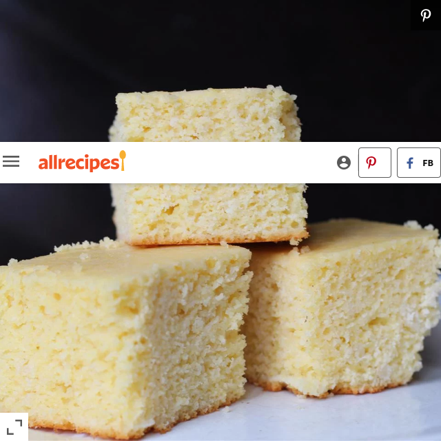

Homesteader Cornbread

Homesteader Cornbread
"My husband and I have made this recipe several times and we love it," says community member FUNKYDEMON. "This is a sweet dense cornbread but I find that it's sweetness is a good complement to a spicy chili. It keeps fairly well but any cut edges will dry out quickly — however since the bread is dense it will still be moist just beyond the cut edge. Only cut off as much as you plan to eat at a time. We also like this at breakfast with a little molasses."
Ingredients
- 1 ½ cups cornmeal
- 2 ½ cups milk
- 2 cups all-purpose flour
- 1 tablespoon baking powder
- 1 teaspoon salt
- ⅔ cup white sugar
- 2 eggs
- ½ cup vegetable oil
Steps
- Preheat oven to 400 degrees F (200 degrees C). In a small bowl, combine cornmeal and milk; let stand for 5 minutes. Grease a 9x13 inch baking pan.
- In a large bowl, whisk together flour, baking powder, salt and sugar. Mix in the cornmeal mixture, eggs and oil until smooth. Pour batter into prepared pan.
- Bake in preheated oven for 30 to 35 minutes, or until a knife inserted into the center of the cornbread comes out clean.
Home